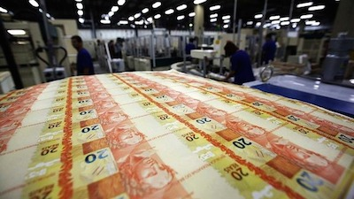

Controle o tempo e veja o aumento de preços com seus próprios olhos. Entenda como acontece, quem se benefecia e quem perde com ela. Aja para preservar os frutos do seu trabalho.
Em geral, associa-se a inflação ao aumento de preços. Na verdade, este é um efeito da inflação. O mais correto seria dizer que inflação é o processo de desvalorização de uma moeda. Ou seja, é um processo que faz com que o dinheiro passe a valer menos. O preço nada mais é do que a quantidade de dinheiro necessária para adquirir uma coisa. Se o valor de dinheiro foi depreciado, o preço aumentará como consequência.
A principal diferença entre a inflação e um simples aumento de preços é que o processo inflacionário atinge todos os produtores e consumidores de uma economia. Todos nós utilizamos dinheiro nas nossas compras e vendas e, por isso, a deterioração do valor do dinheiro afeta a todos, diminuindo o poder de compra dos salarios e dificultando o planejamento financeiro das famílias e empresas. Um simples aumento de preços, por sua vez, é pontual: atinge produtos e serviços específicos e pode mudar a todo o momento. Uma colheita ruim do tomate afeta o preço do tomate – e apenas do tomate; a deterioração do dinheiro afeta cada um dos preços de uma economia.
Existem diversas causas para a inflação, mas a maior e mais comum delas é a política econômica do governo. Um exemplo comum: quando um governante precisa de mais dinheiro para financiar seus projetos, ele tem duas opções: aumentar os impostos – uma medida impopular e sempre evitada por politicos – ou imprimir moeda através do Banco Central.
Sempre que o governo imprime dinheiro e aumenta a quantidade de moeda em circulação num país, o valor do dinheiro passa a ser menor e a inflação surgirá. A lógica é a mesma da famosa lei de oferta: quanto maior a quantidade ofertada de um bem, menor será o seu valor; ou, se o número de Ferraris a venda fosse magicamente multiplicado por mil, o preço da Ferrari cairia estrondosamente.
Com a perda de valor, precisamos de uma quantidade maior de dinheiro para comprar o mesmo que comprávamos antes. Por isso, a impressão de moeda por parte do governo (e do seu banco central) é uma das principais causadoras da inflação.
A principal causa da inflação é esta: a produção de dinheiro em larga escala – isto é, a velocidade ao qual o Banco Central está disposto a ligar suas impressoras de moeda.
Parece óbvio, e é: o maior prejudicado pela inflação é o cidadão que tem menos meios para se proteger dela. A inflação prejudica desproporcionalmente as famílias mais pobres, e isso acontece de duas formas.
A primeira, e mais óbvia, é que as famílias mais pobres tem menos capacidade de planejar seus gastos, seja no curto ou no longo prazo. Em um ambiente de inflação alta, onde quase todos os preços mudam a todo o tempo, será quase impossível planejar as comprar dos mês. Para o longo prazo, será ainda mais difícil poupar ou investir parte do salário. Ou seja, além de dificultar o planejamento das famílias mais pobres ao fim do mês, a inflação também dificulta o planejamento no longo prazo, fazendo com que a família tenha cada vez mais dificuldade em sair da pobreza.
A segunda forma como a inflação prejudica as famílias mais pobres é mais sutil e complicada. Quando o Banco Central jorra moeda nova em uma economia, o dinheiro não perde valor instantaneamente. A percepção geral sobre a perda de valor do dinheiro demora e, por isso, os primeiros a terem acesso à nova moeda são menos prejudicados do que os últimos que a recebem, já com o seu valor depreciado. A pergunta que precisamos fazer é a seguinte: quem recebe a moeda no início do processo inflacionário? E quem a recebe no fim?
A resposta da primeira pergunta nem sempre é clara, mas em geral a nova moeda circula através do sistema financeiro (ou seja, dos bancos) e dos contratos do governo. Sendo assim, os menos prejudicados pela inflação são os indivíduos que tem mais acesso ao sistema financeiro e conhecem melhor o seu funcionamento, além daqueles que possuem contratos com o governo. Durante os anos 80 e 90, muitas famílias brasileiras de alta renda chegaram a lucrar com a inflação através de operações bancárias. Os maiores prejudicados, por outro lado, são os mais pobres – que em geral recebem dinheiro em espécie e no fim do processo inflacionário.
Não é a toa que a implantação do Plano Real, que reduziu a inflação brasileira em 1994, fez com que 9 milhões de brasileiros perdessem o status de miserável quase instantaneamente. O simples fato de a moeda brasileira ter ganho ares de estabilidade fez com que milhões de brasileiros antes miseráveis melhorassem seu padrão de vida. Não se tratou de um milagre, mas da retirada de um pesado fardo que dificultava a administração financeira das famílias de baixa renda.
São muitos os casos de hiperinflação que entraram para a história e quase todos tiveram a causa descrita acima: a impressão descontrolada de dinheiro para pagar gastos do governo.
A Hungria do pós-Guerra, por exemplo, imprimiu quantidades absurdas de moeda para pagar os tanques, aviões e armadas usados na II Guerra Mundial. A inflação chegou a 13,600,000,000,000,000%. A perda de valor do dinheiro foi tão radical que chegou a ser criada uma cédula de 100 quintilhões de pengos em 1946 e ela valia o mesmo que uma cédula de 1,000 pengos do ano de 1944.
Outros processos inflacionários famosos foram o da Alemanha dos anos 1920, que imprimiu uma quantidade absurda de dinheiro para pagar dívidas contraídas no Tratado de Versalhes, e o Zimbabue dos últimos anos, cujo Banco Central descontrolado fez com que a cédula de 100 mil trilhões de dólares zimbabuanos fossem criadas.
No Brasil, tivemos a hiperinflação mais longa da historia. Entre os anos 70 e 90, politicos brasileiros tentaram limitar a deteriorização da moeda através de medidas populistas como o corte de zeros (para evitar cédulas astronômicas como as já citadas), o controle estatal dos preços e a mudança de moedas. Conta-se a historia de que, durante os anos 80, o presidente José Sarney convocou uma reunião de economistas para intensificar o combate à inflação de preços. Depois de ouvir que deveria limitar os gastos do governo e parar de imprimir moeda, José Sarney teria dito que “se precisasse de conselhos assim, não teria chamado economistas”. Eis uma pequena historia que, se verdadeira, nos ajuda a entender por que a hiperinflação brasileira durou tanto.
É necessário poupar e, no mínimo, investir seu dinheiro em algum fundo corrigido por índices como SELIC, como títulos do Tesouro direto ou CDBs. Porém, todos esses investimentos sofrem do risco do governo manipular os índices de inflação como acontece hoje na Argentina.
Logo, o ideal é investir em bens que têm aumento de oferta limitado por sua natureza. Imóveis podem ser uma boa opção pois tendem a ter seu valor de mercado reajustado com a inflação, mas existem os riscos de bolha imobiliária e de desrespeito à propriedade privada pelo governo.
Sem dúvida alguma, pessoas que não tem dinheiro para investir são as mais prejudicadas pela inflação, pois provavelmente seus salários serão os últimos a serem reajustados e o poder de compra do mesmo será progressivamente menor se não houver aumentos reais.
Por isso, é importante votar em candidatos que são compromissados com a diminuição do gasto público e com o controle da inflação. O ideal seria termos uma moeda atrelada a metais preciosos que têm sua oferta limitada por sua natureza e não podem ser criados com uma simples "canetada".
Mais recentemente, outras armas no combate a inflação foram criadas: As criptomoedas. O Bitcoin é a criptomoeda mais conhecida e tem uma quantidade limitada a ser emitida, o que a torna uma moeda deflacionária a longo prazo. Porém, bitcoin ainda é um investimento muito arriscado e deve ser feito com cautela por ter baixa liquidez e alta volatilidade, o que deve melhorar com a maior adoção da mesma. Além disso, os maiores benefícios aos pobres de uma moeda deflacionária existem apenas quando os salários são pagos com a mesma, o que está muito longe de acontecer de forma generalizada com alguma criptomoeda.
Sim, as correntes políticas que mais se pronunciam contra a intervenção estatal na vida das pessoas são as correntes liberais, que vêm crescendo muito nos últimos anos. Uma boa opção para aprender mais sobre a posição desses grupos políticos é ler artigos em sites como Capitalismo para os pobres, Mercado Popular, Liberzone e Portal Libertarianismo. Além disso, existem grupos de estudos em diversas universidades e escolas pelo Brasil chamados Estudantes pela Liberdade sobre temas liberais. Outra ótima fonte de conhecimento é o site do Instituto Mises, que possui artigos de ótima qualidade sobre economia com o ponto de vista da Escola Austríaca.